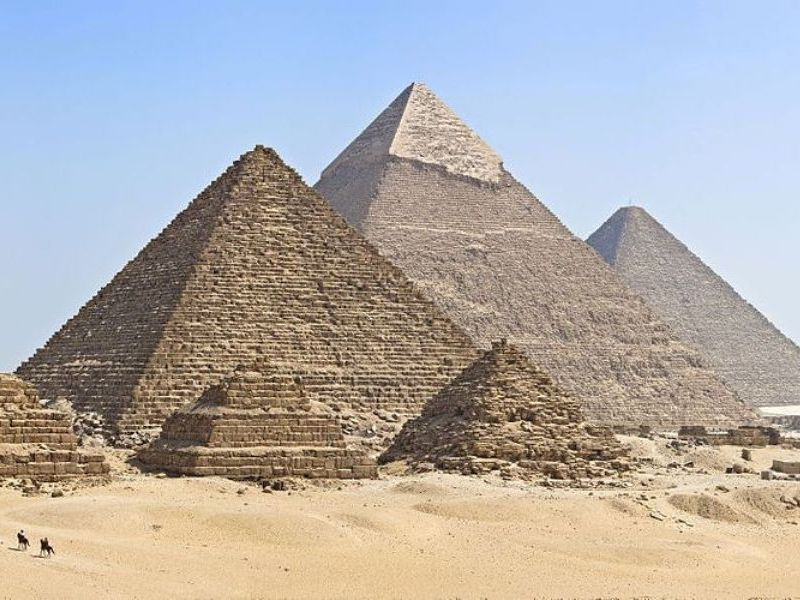
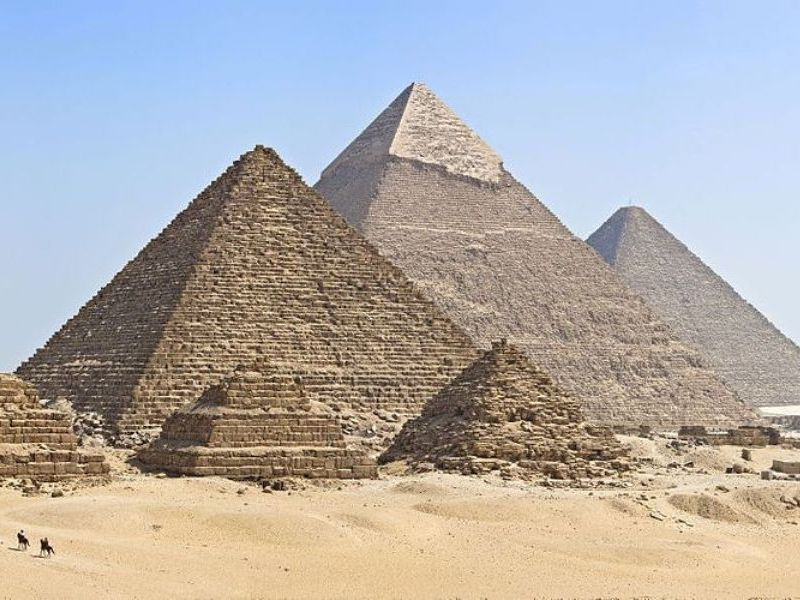

The New Seven Wonders of the World was a campaign to choose Wonders of the World from a selection of 200 existing monuments. Campaign was launched in 2002 by a launched, because the original Seven Wonders list was created in the 2nd century BCE, and the only one Wonder that is still standing is the Pyramids of Giza. Therefore it was decided to upgrade the original list. Many people around the world have take part in this campaign - more than 100 million votes were recieved. The final results of voting were announced in 2007.
The list consists from:
 

The Colosseum is an oval amphitheatre in the centre of the city of Rome. It is the largest ancient amphitheatre ever built, and is still the largest standing amphitheatre in the world today, despite its age.